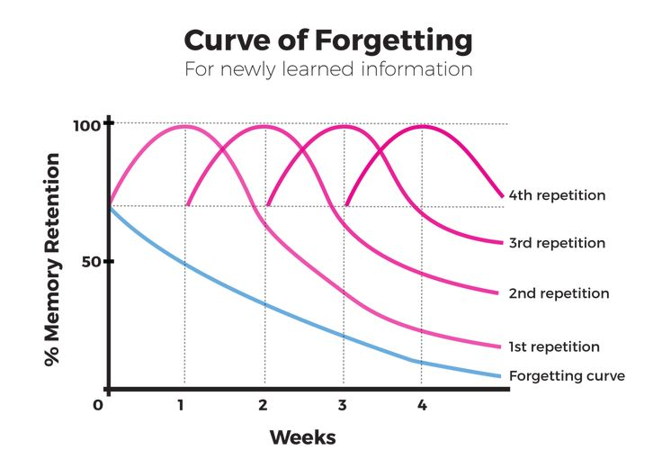
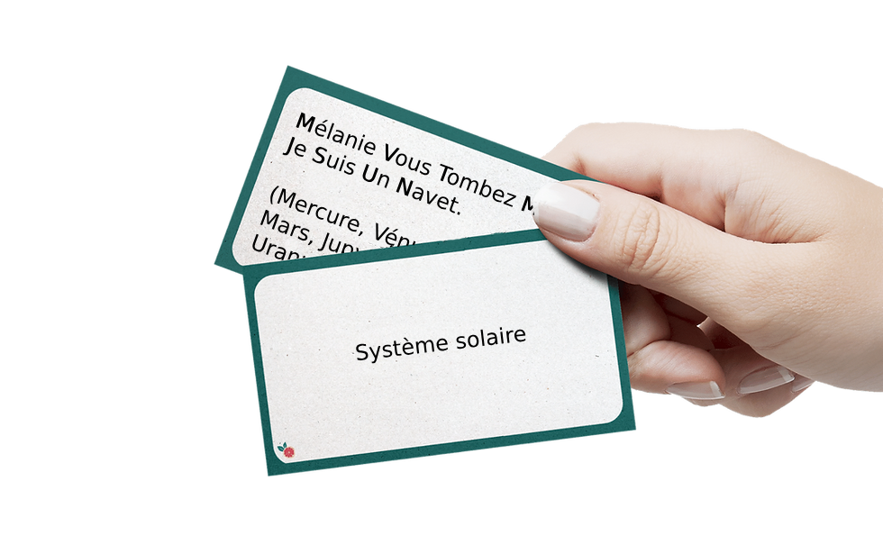
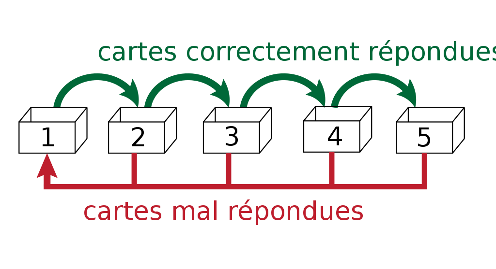

LeitnerBox
Table of Contents
HOW TO STUDY EFFICIENTLY?
Leitner Method
- Sebastian Leitner (1919 – 1989) German commentator and Science Popularizer.
Spaced Repetition

Figure 1: Curve of Forgetting
Flash Card

Figure 2: Flash card
How It Works
- Multi box
- Each box has a longer period of review than the previous
- For each good answer move the card to the next box
- For each bad answer move the card to the first box

Figure 3: Leitner box in use
What Can I Learn
- Translations
- Association with Picture
- Definition
- Gapped Sentence
- Dates
- Concept
Use Social Medial Techniques
- Streak methods
- Notifications to review every day